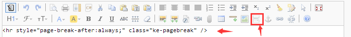

使用kindeditor的分页按钮代码来分割文章内容

<?php
$contents=explode('<hr style="page-break-after:always;" class="ke-pagebreak" />',$article['content']);
if(isset($_GET['p'])) {
if(isset($contents[$_GET['p']])) {
echo($contents[$_GET['p']]);
}else {
echo('不存在该分页');
}
}else {
echo($contents[0]);
}
foreach($contents as $key=>$val) {
echo('<a href="?p='.$key.'">'.($key+1).'</a>');
}
?>
如需使用伪静态分页网址
需在该文章栏目中增加一个"其他页面",页面地址可以设置为 /(cid)/(id)_(p).html
分页循环代码改成下面的代码
foreach($contents as $key=>$val) {
echo('<a href="/'.$article['cid'].'/'.$article['id'].'_'.$key.'.html">'.($key+1).'</a>');
}